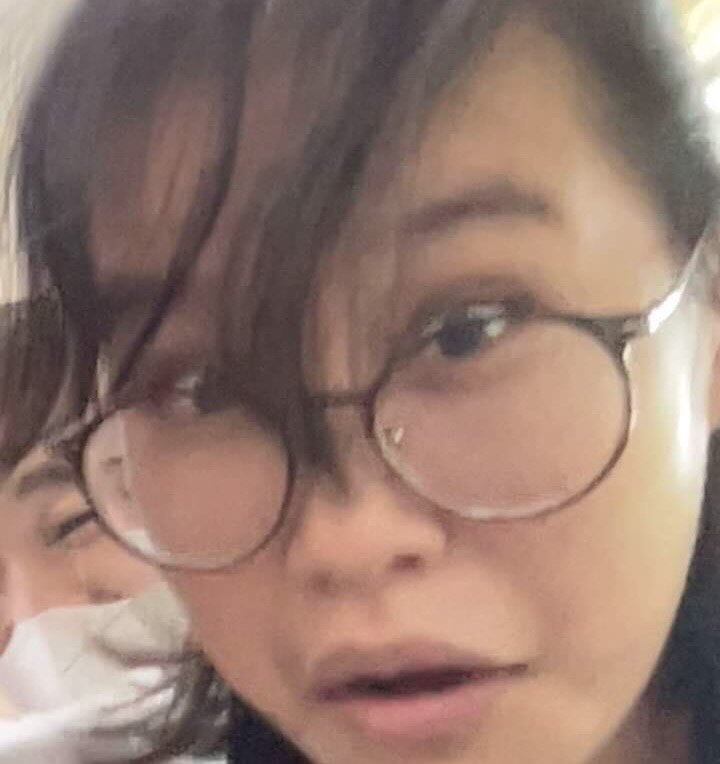

Significance of Project
a. The importance of this project is to help in aiding with the financial challenges MAAAI is facing. Through our project proposal, we are able to generate a way for MAAAI to earn extra income
for whatever resources they need but also give its members an activity to collaborate on with each other. Other than this, it helps MAAAI become self-sufficient with its products. As said in our
project summary, we plan on planting vegetables to sell and earn money from this. Despite that, MAAAI can also take advantage of these products by making them a source for their food. In short,
our plan is not only to help MAAAI benefit financially but also in other ways as well.
b. The main goal our project proposal wants to attain is that we want to at least provide a plan that can help MAAAI relieve some of the financial challenges the institution can potentially be
facing.
1. To be able to create a potential alternate source of income for MAAAI
2. To relive some of the financial challenges MAAI is facing
3. To provide the community with a collaborative activity
4. To sustain the institution for more years to come
Background of the Study
The Problem
- The problem our group would like to address is our partner institution’s lack of financial needs. According to a terminal report based on the OSLE/talk a previous batch had with the institution,
“MAAAI needs to look for more information on ways on how to spread awareness and in the institution, remains numerous challenges most of these are the “financial needs for sustainability of the
organization" “. These said financial challenges that MAAAI is facing does affect their ability to be able to champion their advocacy which is to stop the spread of AIDS/HIV. By addressing this
issue, not only can the financial needs of the institution can potentially be met but also sustain the institution so that they are able to help more and more people further down the line.
- Mindanao Advocate Against AIDS aka MAAAI is a “support group for people living with HIV in Davao City Philippines, serving the Island of Mindanao”. Its mission is to make preventions for
Sexually Transmitted Infections (STI) such as HIV, AIDS, etc. Now the institution's problem is that its finances are not sufficient enough to support MAAAI, Mel Borda, a member of MAAAI made a
statement seen here in MAAAI's Profile Website ``There remain numerous challenges – foremost of these the “financial needs for the sustainability of the organization,”. because of this, it limits
the institution to acquire available medication and other needed resources to be able to complete their Mission which costs a hefty amount of money, this also affects the patients of MAAAI who
are relying on the institution to be able to accommodate them.
- Lack of finances.The problem has existed ever since the start of the pandemic due to the lack of support that the organization is receiving. Adults may experience mental health problems such
stress, anxiety, loss of confidence and self-esteem, and sadness towards the institutions status. It is related because we are trying to spread awareness about the organization and with spreading
awareness, we can gain popularity for the organization and with popularity, people would be encouraged to donate to said organization.
The Intervention
- Our project proposal attempts to address the issue of the financial difficulties our organization encounters in order to survive. This must be resolved immediately since, if the institution
keeps running into the same financial problems, its future may be in danger. Our suggested project, which entails planting and selling vegetables to generate income for the institution, will
assist by giving the employees something to do together while simultaneously helping the institution make money and also help alleviate the aforementioned financial challenges the organization is
facing. Our proposed approach will benefit the organization not only today but also throughout the coming years.
- The project we intend to propose is a project to help financially sustain the institution. We have decided to integrate our project proposal with our SIP. Since we will have to grow vegetables
for our SIP, we have decided to gather these grown vegetables and sell these to generate revenue to donate to the institution. As soon as we are able, our group will start gathering resources
to create compost to grow plants. Once we are able to produce types of compost we are satisfied with, we will start the experimenting process on how to efficiently grow the plants. And when we
determine the most efficient way to grow our plant, we will start mass producing it in order to create products to sell. Our proposed project can help sustain our partner institution by giving
them the opportunity to be able to replicate our goal for this project which is to financially aid the institution. This can also give the people of the institution a hobby to do to remove their
stress from the bigger problems they are facing.In short, our proposed project is to produce and sell plants. The aim of the project is to financially aid the institution so they can buy whatever
they may need. And this can also provide them a long-term solution to their financial problem.
- As mentioned above the institution's problem is Lack of Finances, so our group's solution to that problem is to create a business for the Institution and that is to sell produce that has been
grown from the Institution. To add more context, our SIP focuses on the effects of composting to plants, specifically Radish plants. With the help of our SIP we will help the institution become
self-sufficient and sell these Radishes to be able to gain profit (specifically roughly 750 pesos) from the produce.This solution will be effective because of three things: one, it teaches the
institution to be self-sufficient with their food which they could use for consumption or business which is what we plan for the institution to do. Two, it also profits the institution that it
helps with their financial issues
Here we have Antonio, a Disciplinary officer in his class with his groupmate Jelena Pido (Both absolutely qualified for the job). He is into sports and other activities which involve the great outdoors. A known businessman in the class as well with his two business partners in supplying internet to his fellow classmates. Though he may not be 6 ft like Aaryan, he’s got the ego of one (maybe more).

This is Jelena Pido, but people call her Lena or Pido. Jelena plays football and takes it seriously. Aside from football, Jelena loves 2 things: The Weeknd and The Weekend. Jelena is the youngest in her family and acts like the youngest in the group. Jelena is an introvert but is an extrovert with the people she loves.
